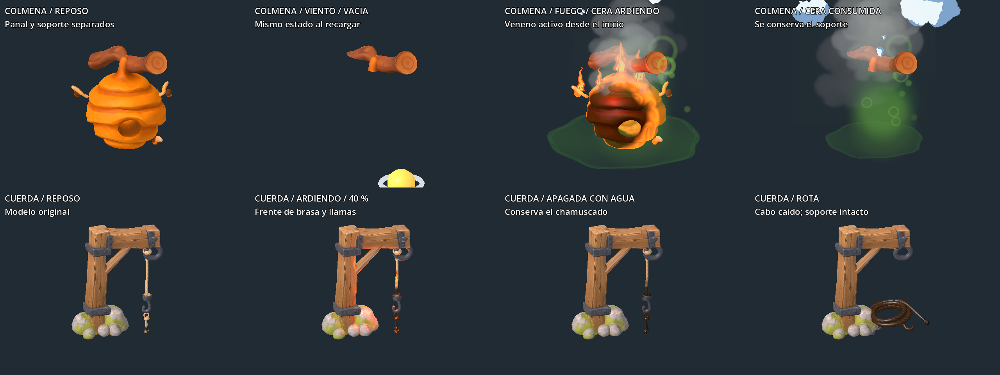
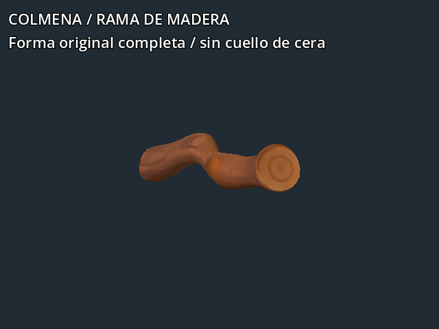

24/11/2026. Corregidos el estado visual vacío de la colmena y la combustión de la cuerda con los assets existentes. Todo por código, sin editar los GLB originales.
Lámina completa, ocho estados · 2560 × 960

El modelo importado no tenía la hija panal que esperaba el controlador. La primera separación por altura dejaba cuello de cera y recortaba la punta curva de la rama. Tras la observación de Pablo, presentacion/partes_colmena_3d.gd identifica las islas conectadas de la malla y separa la rama real completa (1.018 triángulos) de la cera e insectos. Conserva todos los triángulos, normales y UV originales, y regenera tangentes. La madera recibe un tinte menos naranja que conserva veta y anillos. El GLB original queda intacto.
Estas son las vistas actuales; la lámina de ocho estados anterior conserva la primera versión del corte.

Colmena completa con la rama revisada. Prueba nueva prueba_rama_colmena.gd y regresión prueba_colmena_cuerda_visual.gd: cero fallos. Capturas y logs en output/rama_colmena_2026-11-24/.
Viento: el panal baja y gira durante 0,35 s, luego desaparece; queda el soporte a la escala original. Al recargar una colmena ya usada aparece esa misma representación vacía, sin reducir todo el modelo a 0,6. Conserva botín, flag y señal de una sola utilización.
Fuego: carbonización y llamas sobre la cera durante unos 0,9 s antes de desaparecer el cuerpo. La nube venenosa empieza inmediatamente y conserva sus 3 s habituales; no hay panal de recompensa. El soporte permanece. La animación no retrasa la consecuencia mecánica.
Combustión sobre cuerda y cabo, separados del poste. Frente de brasa, humo y cuatro focos pequeños; un selector de tonos cálidos evita carbonizar los herrajes grises que comparten atlas con la fibra. Al apagar conserva el chamuscado y deja humedad visual. El cabo caído también aparece carbonizado.
Se mantienen T_ARDE, los estados, las señales y el soporte que cae. Con escarcha sigue tensada hasta que acaba el bloqueo; la presentación limita su avance antes de la rotura. El modelo y las primitivas alternativas pasan la misma prueba.
Las capturas detectaron que material_override podía tapar el shader asignado a cada superficie: los parámetros avanzaban, pero el modelo seguía dibujando su material antiguo. Se capturan los materiales activos, se elimina ese override y se asignan las copias de superficie. El cambio también cubre la recogida de materiales de Reactivo3D para que su disolución final actúe sobre el material realmente visible. La prueba nueva comprueba esa ruta explícitamente.
prueba_colmena_cuerda_visual.gd, prueba_combustion_objetos.gd, prueba_fuego.gd, prueba_reacciones_entorno_objetos.gd y prueba_materia_reactivos_3.gd: cero fallos. Verificados modelo real, dimensiones tras la separación, panal único, recarga mediante flag, veneno, materiales visibles, apagado, escarcha, retirada de colisión y caída del soporte.
Capturador: herramientas/captura_colmena_cuerda_visual.gd. Salidas y logs: output/colmena_cuerda_2026-11-24/. Capturas Forward+ en laboratorio con los controladores reales y tiempos fijados para comparar; no es un playtest completo. El entorno emite el aviso habitual de caché user:// no escribible.
Coste: clasificación de islas al crear cada colmena y materiales propios por estado. La selección usa la isla más alta del asset instalado; si se sustituye por una malla de topología diferente habrá que revisar ese criterio. El selector de fibra se basa en el atlas actual, no identifica materiales físicamente. Sin medición de un escenario con muchas colmenas simultáneas.
La discrepancia de diseño de la seta resonante y las nuevas reacciones visuales de plantas quedan fuera de este lote. Sin commit.